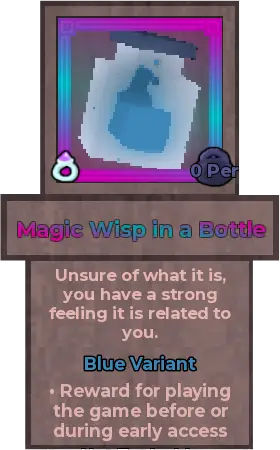
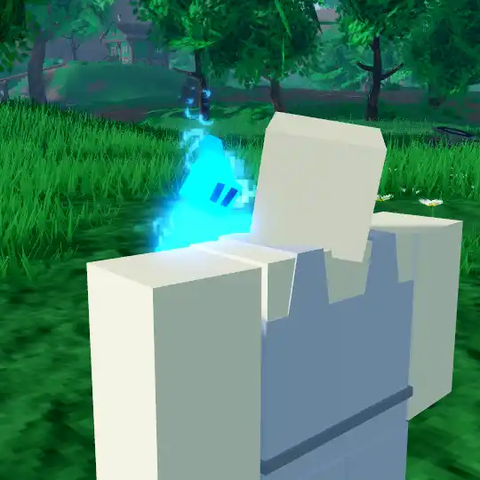
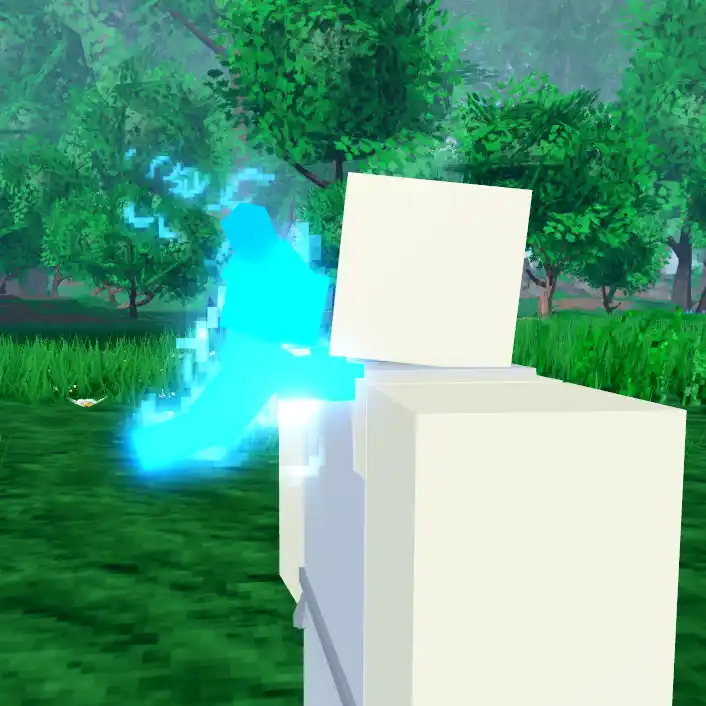
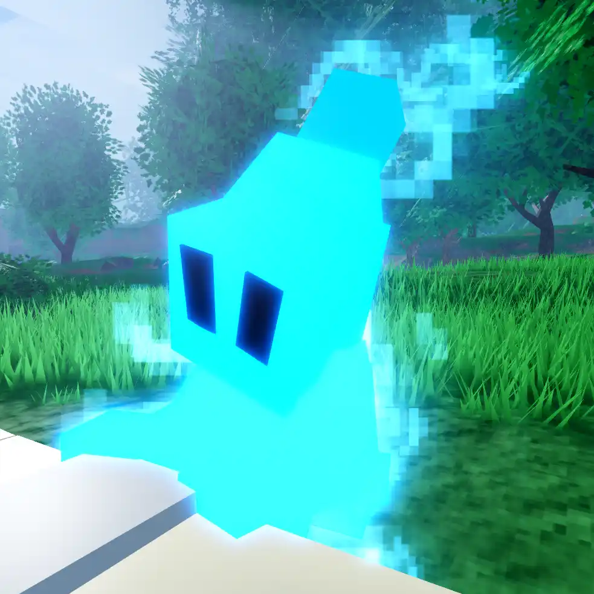
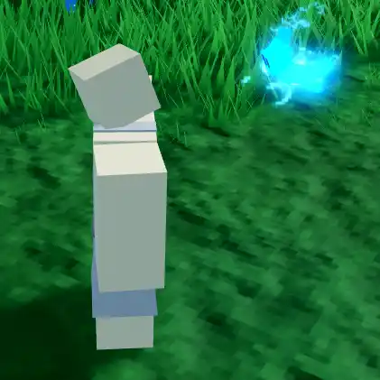
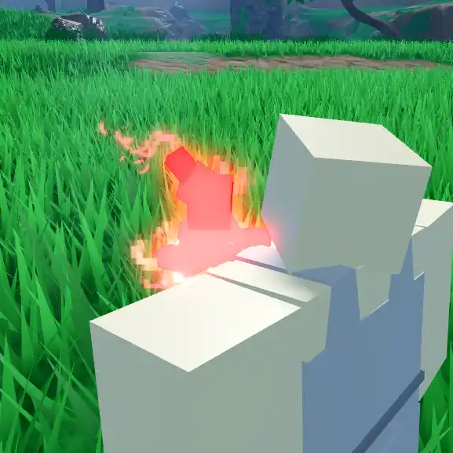
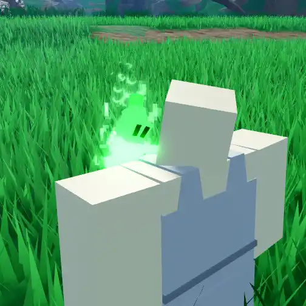

Magic Wisp in a Bottle
(Not actually a relic)

Info
Slot: Accessory
Recolorable?: Yes
Unique Colors: None
Particle Effects: Yes
Sound Effects: Yes
Appearance & Effects
In-game description: Unsure of what it is, you have a strong feeling it is related to you.
Reward for playing the game before or during request-to-join early access.
The Magic Wisp In A Bottle appears to be a small, fairy-like creature that glows and emits particle effects. It follows the player around and land on the shoulder when idle. It also has animated eyes that can blink. The wisp is one of the most animated cosmetics in the game.
Despite what many players think, the Magic Wisp in a Bottle is NOT a relic; rather, it has the legendary rarity.
Inspiration
The wisp was not inspired by anything in particular. As it states in the description, the wisp is a reward for players who played during request-to-join early access, although players could also obtain it during open early access. This means it is most likely an original creation for these early access players.

The wisp resting on a player's shoulder

Viewed from the side
Image Gallery

A close-up view of the wisp

The wisp flying to the player

Colored red

Colored green